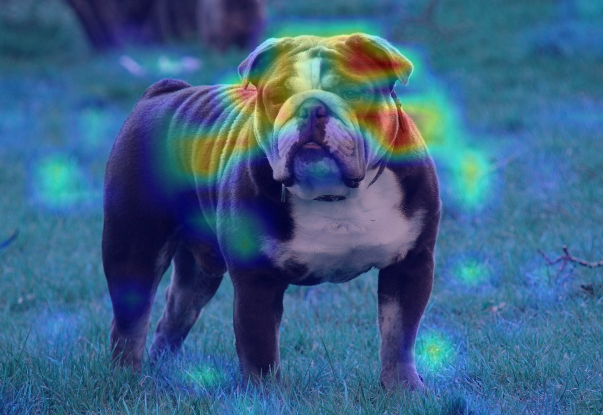
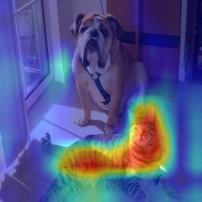
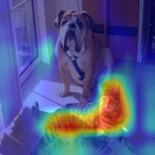

NocabSoftware.com
A-EYE: Attention Embedding dYnamics Explorer
TL;DR:
Grad Cam is a technique that allows a user to interrogate an image classification model and ask “what pixels are most relevant when making a classification decision?”. This technique is an effective AI explainability tool, so I wanted to apply it to embedding models and ask a similar question “what pixels are most semantically meaningful”. Further, I wanted to apply this technique to video, where prior frames may help influence or contextualize the current frames.
To play the gifs at the same time, please wait for the gifs to load (and cache) then refresh the page.
What is Grad Cam
Grad Cam by Selvaraju et al. published in 2019, is a paper which describes a technique to produce an image mask showing what regions of an input image are relevant for a given loss. From the abstract of the paper:
Gradient-weighted Class Activation Mapping (Grad-CAM), uses the gradients of any target concept, flowing into the final convolutional layer to produce a coarse localization map highlighting important regions in the image for predicting the concept.
An example of a Grad CAM image is below, which shows a picture of a bull dog, passed through ResNet40, with the class label of “bull dog”.
To a human, it seems like the model has done a pretty good job. The eyes, ears, neck, and part of the body of the dog were highlighted as important.
Using this library by github user jacobgil as a template, I decided to build my own Grad Cam tool. To simplify, generating a Grad Cam style visualization requires passing an image through a neural network, capturing the neuron activations of the last convolutional layer, then capturing the same neuron’s loss gradient during a back propagation step. The convolutional layer will naturally have a width and height (it hasn’t been linearized yet), so these two saved matrices can be elementwise multiplied with each other. The resulting 2D matrix of values is normalized, and scaled to match the original picture, and overlaid.
This results in an image where pixels that were highly active in the forward pass, and were positively reinforced in the backward pass are highlighted in red, while all other pixels are suppressed in blue.
Grad Cam for Embedding
The original paper applies Grad Cam to classification models. This means, during back propagation, a well defined loss can be computed and back propagated through the model to capture the gradients. This will allow for the gradients captured to be relevant to the specific class that was back propagated.
Jacobgil has a good example of this, which demonstrates the same image being passed in (resulting in the same neuron activations during the forward pass), but different classes are used during the loss calculation and backward propagation, resulting in two totally different Grad Cam visualizations.
 

The above two examples show the Grad Cam answering the question “What pixels are most helpful for the label Dog” and “What pixels are most helpful for the label Cat”.
However, I want to apply Grad Cam to an embedding model, which does not have a clear label for a given frame. In other words, I want to answer the question “What pixels are most semantically meaningful”. So while building the Grad Cam for an embedding model was relatively easy, defining a loss function was not.
Defining a Loss Function: Text Labels
I decided to use CLIP models/ embeddings for this project for two reasons:
CLIP models are powerful, widely used, and there are several publicly available foundation models built by institutions with lots of resources
CLIP models also allow text to be embedded into the same space as image embeddings.
The second bullet point is useful, because it allows a way for us to define a loss function which will highlight arbitrary items in a scene. For example, consider this capture of a live stream of a bird feeder [https://www.youtube.com/watch?v=OIqUka8BOS8]
Every 3 frames are embedded into CLIP Space, and compared to the CLIP embedding of the text “birds”.
[Animated_3.opti.gif]
The highlighted pixels are those that most strongly support the image is “birds”. Notice, the model I’m using seems to really attend to the suet feeder box in the center and tends to ignore sparrows. But when a bluebird and a cardinal land in the open feeder box, they tends to be the most relevant section of the image.
Here is another for multiple scenes of Tokyo at night highlight the label “people”

Also, please forgive that the highlighting does not perfectly line up with the birds on the screen. I believe part of this is because I’m only running a (relatively small) RN50 model with only 360P video quality. I believe that increasing either the video quality, or the CLIP model size would produce more refined visualizations, however, I only have a macbook pro laptop to work with, and I wanted to keep these results to relatively real time for application to live streaming.
The specific loss function is shown here:
def text_label_loss(self, output: torch.Tensor):
inputs = self.tokenizer(texts=["birds"]).to(self.device)
text_outputs = self.clip_model.encode_text(inputs)
target_class_id = 0
text_embedding = text_outputs[target_class_id]
result = torch.cosine_similarity(output.squeeze(0), text_embedding, dim=0)
return result
In plain english: I compute the embedding value of the frame, compute the embedding value for the term “birds”, and use a cosine similarity between them and use that as the loss function.
This shows that the Grad Cam technique can be applied to a CLIP model if provided with a specific text filter.
While this is cool, a similar result may be obtained with a more traditional masking model. However, masking models require specific training data and known classes. Because I’m using a CLIP model, I can create any arbitrary text filter.
Defining a Loss Function: Abstract Text Labels
My goal is to interrogate the model and determine “what pixels are most semantically meaningful”, or what pixels have the most importance to the resulting embedding, and are relevant in the scene. So I can create a text label of something more abstract like "something noteworthy", and highlight all elements in the frame that are similar to "something noteworthy".
I can ask the model what pixels are most similar to the label "an empty scene". But this is the exact opposite of what I ultimately want, so I can instead produce a negative loss function for this label. This is effectively asking “what pixels discourage labeling the image as ‘an empty scene’”. More concretely, “what pixels are NOT considered ‘an empty scene’”
Here is the positive and negative loss functions side by side:
def text_label_loss(self, output: torch.Tensor):
inputs = self.tokenizer(texts=["something noteworthy"]).to(self.device)
text_outputs = self.clip_model.encode_text(inputs)
target_class_id = 0
text_embedding = text_outputs[target_class_id]
result = torch.cosine_similarity(output.squeeze(0), text_embedding, dim=0)
return result
def text_label_loss(self, output: torch.Tensor):
inputs = self.tokenizer(texts=["an empty scene"]).to(self.device)
text_outputs = self.clip_model.encode_text(inputs)
target_class_id = 0
text_embedding = text_outputs[target_class_id]
result = -torch.cosine_similarity(output.squeeze(0), text_embedding, dim=0)
return result
Notice the 2nd to last results = … line is different between the two.
Here are some examples and the labels used, along with the positive or negative loss result.
While these results are reasonable, it’s not clear what is the best label to use. Additionally, each frame is considered in isolation, with no context or reference from prior frames. It would be best if we could use prior frames to help contextualize the understanding of the current frame. Further, this can only be applied to CLIP models which also map text to the same space as images. However, there are many high quality image embedding models which only operate on images, so these text filter loss functions will not work.
Defining a Loss Function: Compared to Prior Average
To leverage prior frames, there are two main techniques I considered. In both cases, I computed an average embedding vector of the prior N frames. For one loss function, I compared this average embedding to the specific embedding of the current frame, and for the other loss function I computed the delta between the average and current embeddings.
Similarity to Average
The loss function for the first case (comparing the current frame’s embedding to the average embedding) is shown below.
def recent_average_loss(self, output: torch.Tensor):
result = -torch.cosine_similarity(
output.squeeze(0),
self.recent_image_embeddings.average_as_tensor(),
dim=0)
return result
I ran 3 different experiments, each with an increasing window of frames used to compute the average:
Intuitively, the above loss functions can be understood as asking the model “What regions of the current frame are most semantically different to the prior 0.3, 3 or 15 seconds of video?”
Delta to Average
The second loss function used the delta between the average and the current frame. In order for this to work properly, I needed to normalize this delta.
def recent_average_delta_loss(self, output: torch.Tensor):
delta = self.recent_image_embeddings.average_as_tensor() - output
result = delta.norm()
return result
Again, the same window was used to produce 3 different results
With this second style of loss function, we are asking the model “what regions of the image are driving the most semantic difference compared to the prior 0.3, 3 or 15 seconds of video?”
With this second style of loss function, we are asking the model “what regions of the image are driving the most semantic difference compared to the prior 0.3, 3 or 15 seconds of video?”
Conclusions and Observations:
Grad Cam is most effective when you have a well defined loss function, like that typically found in classification tasks. However, the technique still works for embedding models, but requires some creativity when defining the loss function.
For the model I was using, and across the different loss functions I defined, I noticed that text (like that found on the floor, signs, or the video UI) typically drew the attention of the model. People were also consistently draw.
The performance requirements of Grad Cam are not too extreme. However, I did have to make some sacrifices in order for near real time computation and rendering. First, all videos were only 360p. Higher quality video does cause each Grad Cam to take longer to compute. Secondly, I am only using a (relativly) small CLIP embedding model Open clip RN50x16. If I used a larger model like OpenAi CLIP vit Largex14 I would get more fine results, less blurry blobs. But the trade off is I would no longer be able to run this at near real time.
Currently, the text loss function runs at about 2 frames per second, while the comparative loss runs at about 15 frames per second. While not quite up to a minimum standard of 24fps, this is reasonably good results for the performance on a macbook pro laptop with unoptimized python code.
Future Work and Impact:
Each of the above visualizations considers a single loss function back propagation, but theoretically multiple losses can be calculated to produce multiple visualizations which can then be averaged, maxed, or threholded together to produce better results. For example, we can take the short, medium and long term average loss comparisons and see what parts of the image they all agree are semantically different (or semantically similar).
Additionally, we can consider multiple different text filters. Suppose we want to highlight all the birds and squirrels instead of just one or the other.
However, we must be careful when improving the visualization. This tool is ultimately an AI explainability tool, an “eye-tracker” for a convolutional model. By tinkering and adjusting the loss function to produce a result that matches with our (human) instinct, then we may inadvertently removing the value of these kinds of tools. Suppose a vision model receives a picture of a Stop sign, but ‘thinks’ that it’s actually a Speed Limit 45 sign. Researchers will want to know answers to the question “What in the image is most relevant to the output?”, this A-EYE tool helps identify times when an AI model attends to parts of an image that a human would not expect.
There will always be more questions, like “why does that region of the image impact output”, or “how specifically does this patch influence the embedding, vector in CLIP space does this image patch represent?” But identifying which patches are most semantically relevant for creating an embedding vector is the first step.